スタビライザー等
スタビライザー
SD-45
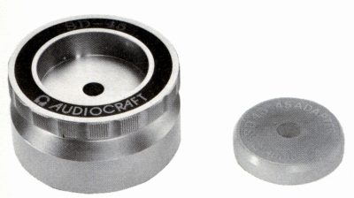
■価格 4,500円
■備考 真鍮製。重量 500g
45回転ドーナッツ盤用アダプター付き。
LPにはそのまま、裏がしてアダプターを
併用すれば、ドーナッツ盤にも使用可能。
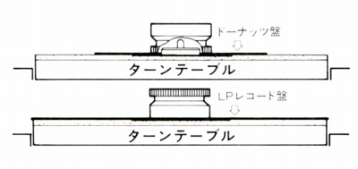
SD-33
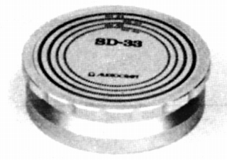
■価格 7,500円
■備考 真鍮製。重量 730g
別売り 追加加重用SD-33B(730g
7,000円)及び
反り補正リングSR-6(1,500円)あり。
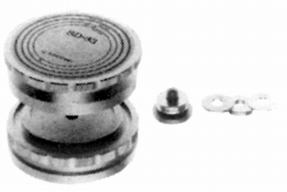
基本的には単体使用だが、重量級プレイヤーでは
SD-33Bを連結した1,460gでの使用が推奨されていた。
また、マイクロRX5000など超弩級プレイヤーには
SD-33Bを2台連結した2,190gでの使用まで想定されていた。
スピンドルを傷つけない為に、SD-33・33B共にセンターに
30�o径のテフロンワッシャーを採用、穴をテーパー加工している。
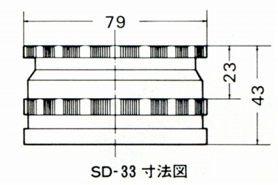
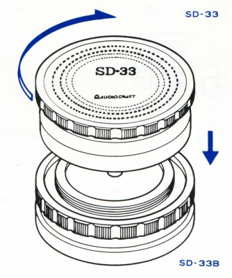
また、一般にスタビライザーは凸型の反りには有効だが、凹型の
反りには効かない。それに対応するのが反り補正リングSR-6である。
0.5�o〜3.0�oまでの0.5�o間隔の厚みが異なる6枚のリングで、
ターンテーブルとレコードの間にセットし、SD-33で凹型の反りを補正する。
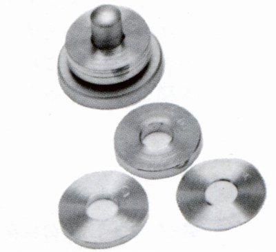
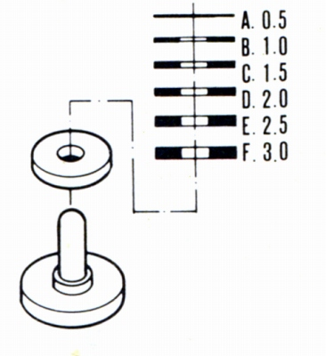
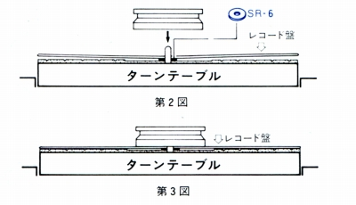
SD-600
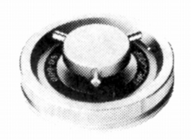
■価格 9,900円
■備考 真鍮製
重量 500g
反り補正リングSR-6(1,500円)あり。
ターンテーブルシート
TM-300
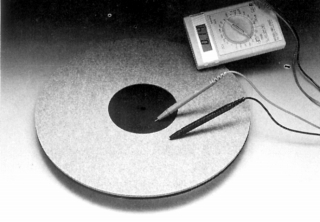
■価格 12,000円
■備考 高導電性フェルトと導電性ゴム製
重量 340g
厚さ 8�o。
オーディオクラフトのインデックスへ